AI 3.0强化学习
从打麻将的 AI 讲起：
让机器在试错中学会决策
本讲要回答三个问题
真实决策问题
怎么变成数据问题？
以麻将为例：状态、动作、输出概率，如何用数字表示。
AI 怎样在
试错中变强？
奖励、策略、探索、自我对弈；Suphx 与 LuckyJ 的实战证据。
同一套方法
还能做什么？
大模型推理（o1 / R1）、机器人、自动驾驶；以及对管理者意味着什么。
上一讲教会机器“看”，这一讲教会机器“做”
机器学习
从数据中学规律：预测、分类。
深度学习
多层神经网络：自动提取特征，擅长感知（图像、语音、文字）。
强化学习
在环境中试错，用奖励学会一连串决策。
预训练大模型
下一讲：提示词、智能体。（本讲 Part 5 先预告：RL 如何训练大模型推理）
监督学习：有标准答案（这张图是猫）；强化学习：只有延迟的得分（这局赢了/输了）。
游戏：AI 的试验场
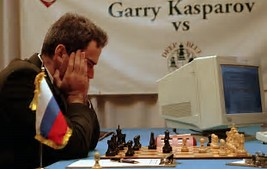
IBM 深蓝
击败世界冠军
国际象棋：穷举搜索 + 人工设计的评估函数。
机器的“智能”来自算力与专家规则——属于 AI 1.0 的思路。
对比：围棋的搜索空间太大，这条路走不通——这正是 2016 年的突破要解决的问题。
强化学习的时代：
DeepMind
⚠ 收购金额为媒体报道口径，原 PPT 亦写作 500M USD。
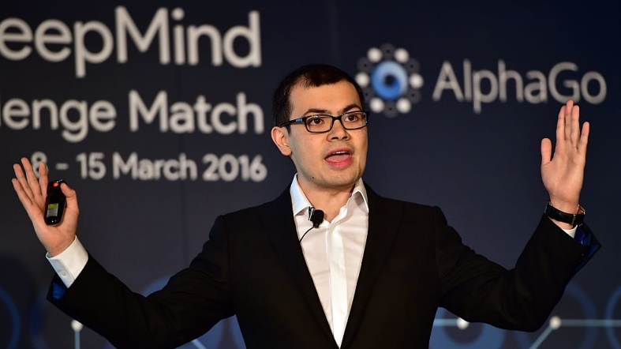
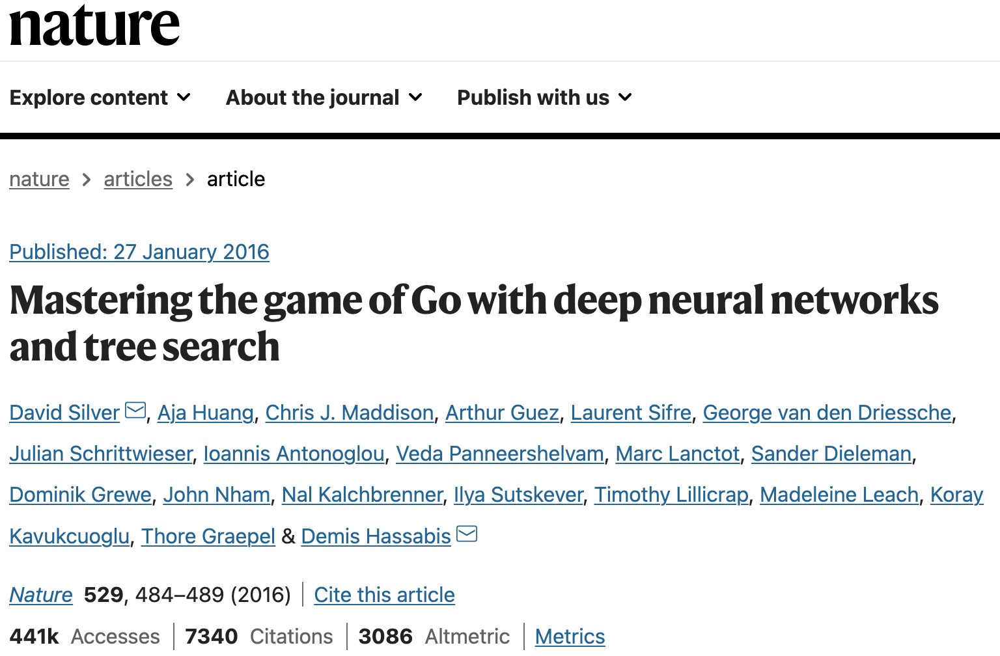
Deep Neural Networks
with Tree Search
先学人类棋谱（监督学习），再自我对弈（强化学习）：该走哪里？
这个局面赢面多大？对应本讲的 P(WIN)。
用两个网络把搜索只集中在“有希望”的分支上。
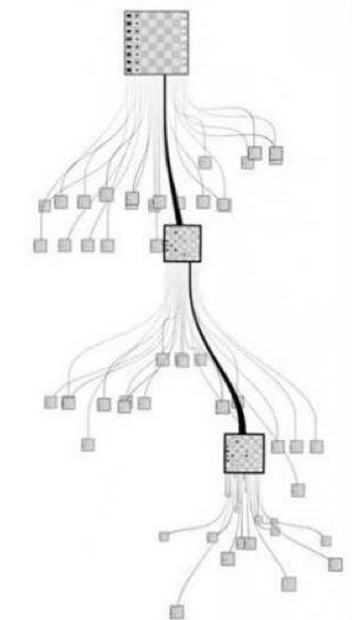
游戏 AI：每一次突破，都是更难的游戏
游戏是人类世界
最完美的模拟
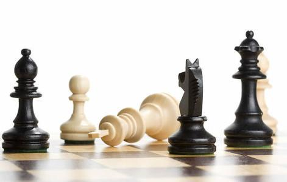
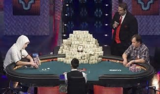
越接近现实，越难
| 维度 | 取值 |
|---|
多人 · 随机 ·
不完全信息
拖动滑块：随着牌局推进，已打出的牌越来越多。你能看到的仍然只是一小部分。
蓝 自己手牌 青 牌河 赭 未知（对手手牌 + 牌山）
把麻将变成数据问题
目标：13 张牌 + 摸 1 张，凑成 4×3+2
4 组（顺子 / 刻子）+ 1 对将牌 = 14 张。
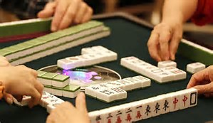
一局牌 = 一连串决策，最后才结算得分
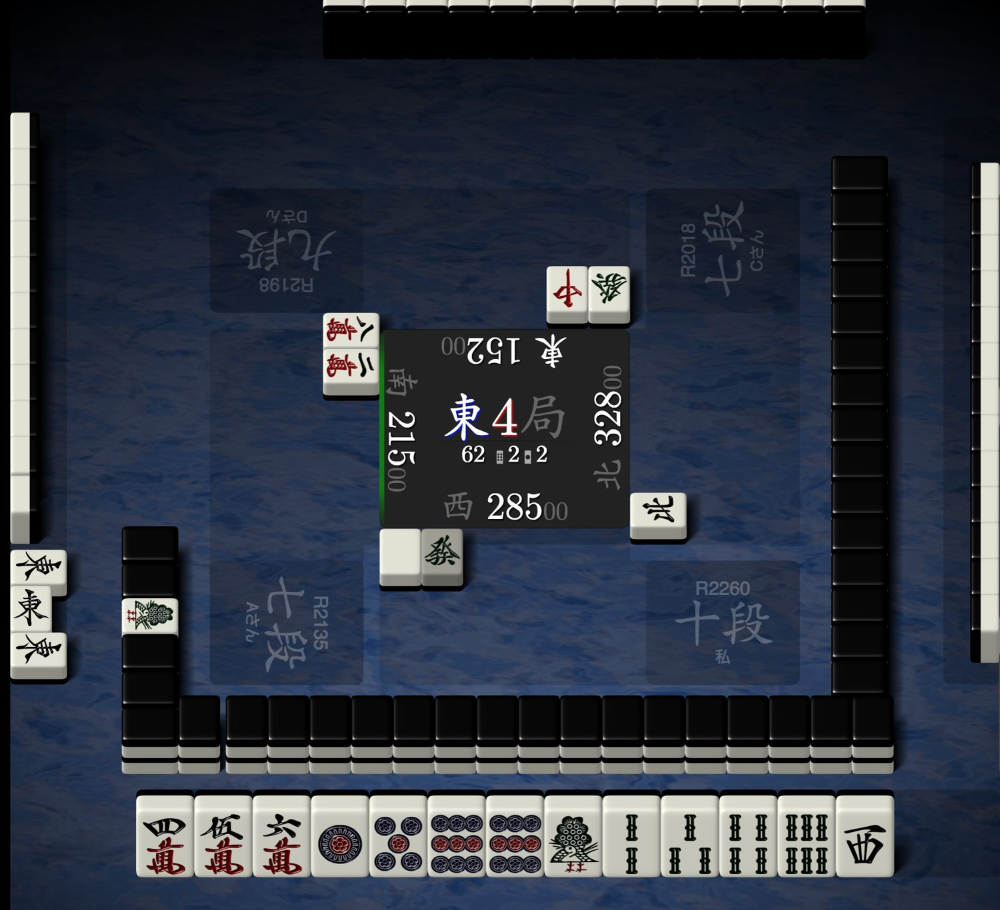
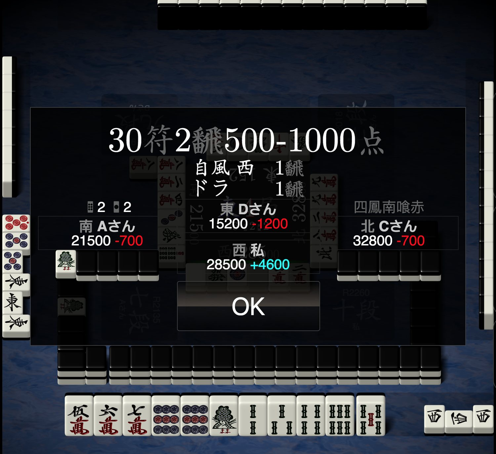
单步决策没有“标准答案”，只有整局的最终结果。这正是强化学习登场的原因。
不是赢一局，而是长期名次好
天凤平台“稳定段位” = (5·n1 + 2·n2) / n4 − 2 （nk 为获得第 k 名的对局数）。调节名次分布：
天凤（Tenhou）：日本在线麻将平台，段位 1–10 段 + 十一段。
每一步，都由七个决策器之一负责
希望 AI 输出：每张牌被打出的概率
一手牌 = 一个数字矩阵
字牌 7 种，对应第 4 行前 7 列。
实战中将多个这样的矩阵堆叠（手牌、牌河、副露……）作为输入。
输入 → CNN 变换 → 概率输出
滤波器
滤波器在每一行滑动，相同权重检测同一种牌型；后接全连接层 + softmax，输出 34 种牌的概率。
强化学习：左右互搏
强化学习：从后果中学习
一个人下棋，怎么进步？
模仿高手
利用人类比赛牌谱，学“高手在这个局面打什么”。
监督学习。上限 ≈ 人类。
左右互搏
自己和自己对局，只用输赢作为反馈，不断改进策略。
强化学习。可能超越人类。
先模仿，再互搏
用牌谱“热启动”，再用自我对弈精修。
AlphaGo、Suphx 均采用。
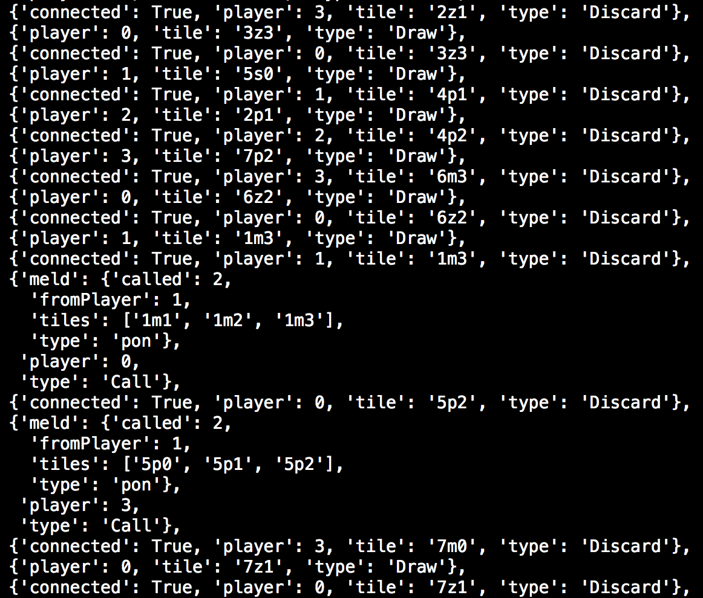
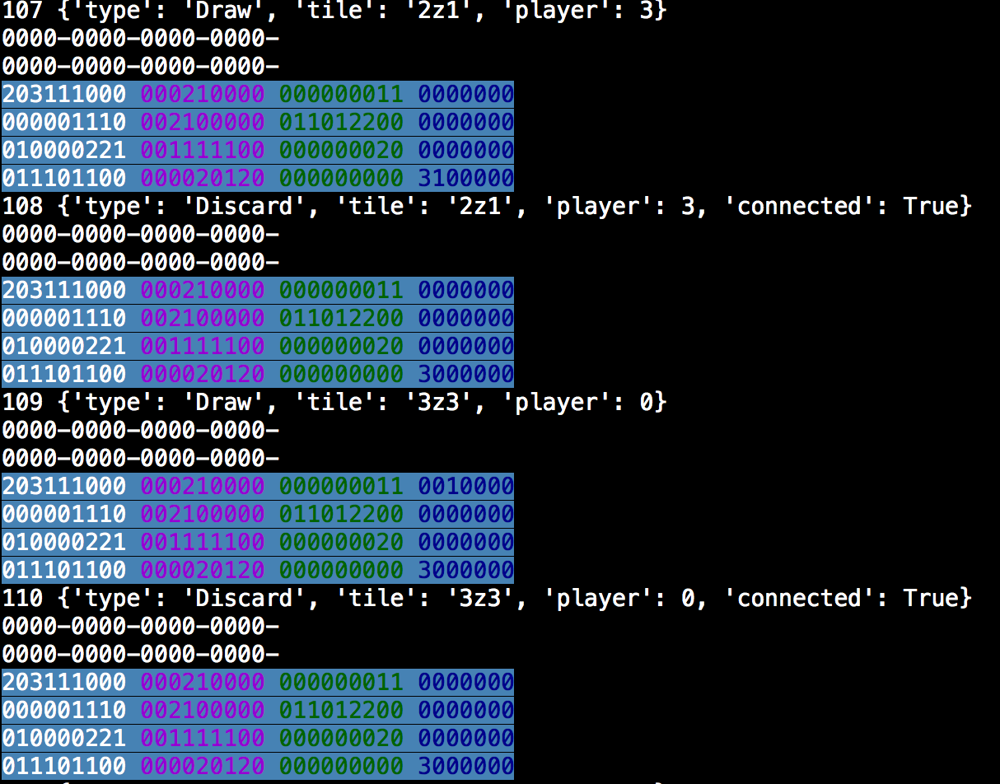
牌谱 = (局面, 动作) 配对
每条日志记录谁摸了什么牌、打了什么牌、是否吃碰杠。把它转成 4×9 矩阵，就得到海量带“标准答案”的样本。
只能学到“人会怎么打”，而不是“怎么打最好”；人类的习惯与错误也会被一并学走。
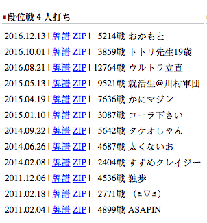
只有输赢，也能估出胜率
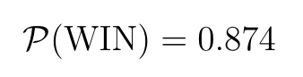
五个词，描述任何序贯决策问题
远期的奖励，值多少？折扣因子 γ
γ→0：只看眼前，近视；
γ→1：同等重视未来，长远但难学。
麻将一局 ≈ 数十步，需要 γ 接近 1。
机制① 探索还是利用？
ε = 0 可能一直锁死在次优臂；ε 太大则白白浪费。
试试几个不同的 ε，再重置。
机制② 赢了，就多做刚才的动作
三种打法的真实胜率分别是 30% / 50% / 80%（AI 不知道）。AI 只看到每局的输赢，就能把概率逐步推向最好的打法。
机制③ 价值：每一格值多少分
起点在左下 S；终点 +1；陷阱 −1；每走一步 −0.04（鼓励走近路）。
格子底色 = 该格最大 Q 值；箭头 = 当前最优动作。
奖励从终点向起点逐步“传播”。
自己做对手，水涨船高
循环：当前策略 πk 四家自己打 → 产生对局数据与输赢 → 更新为 πk+1 → 对手同步变强。没有人类老师，也就没有人类的天花板。
麻将 AI 的前沿
AlphaHu
Part 2–3 的建模思路
数据化表示 → CNN 输出概率 → 自我对弈（原 PPT P18–P25）。
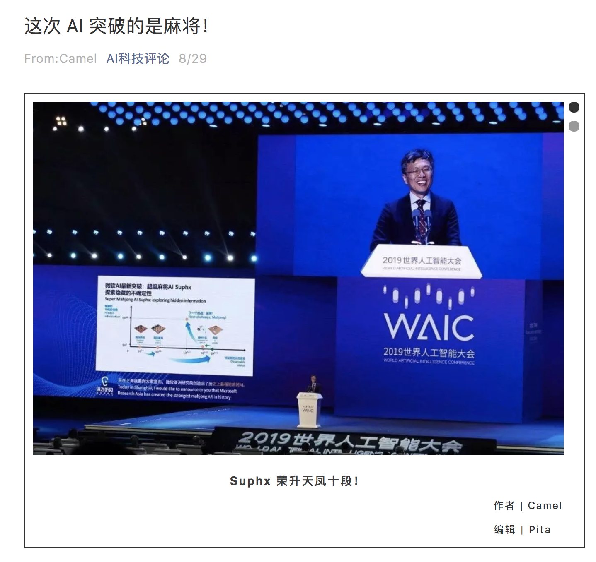
微软 Suphx：监督学习 + 强化学习 + 三项新技术
流程：人类牌谱监督学习 → 自我对弈强化学习（策略梯度）→ 对局中在线适应。
稳定段位：AI 已超过顶级人类
⚠ 各行来源、年份、对局数不同；对局数少时稳定段位误差可达约 ±1 段，不宜逐位精确排序。
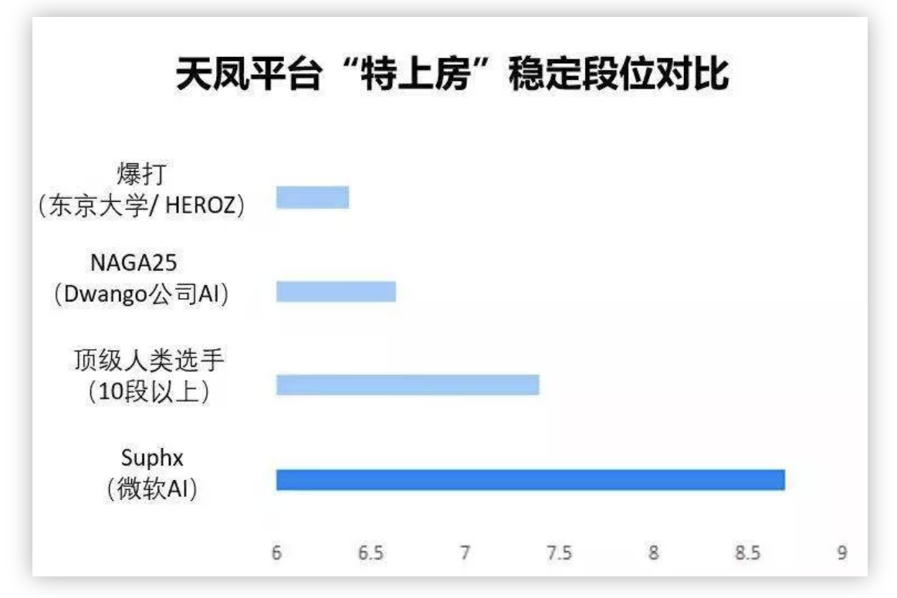
自我对弈 + 遗憾最小化：LuckyJ
天凤 10 段
仅 1,321 局达到 10 段，稳定段位 10.68（腾讯公布）。
ACH + 非完美信息搜索
强化学习（Actor-Critic）与遗憾最小化结合的自我对弈；搜索结果作为特征输入策略网络。
国标麻将
线下邀请赛战胜 6 位职业选手（腾讯称首个）。
① 公开可核的人类对局记录中，LuckyJ 仍为最高；② 2026-10，NAGA 推出“自我改善型”新模型，称在 AI 间对局中优于旧版，但无公开人类对局成绩；③ 开源的 Mortal（深度 RL）无官方天凤段位。⚠ 以上来自第三方整理，未逐一核对原始公告。
超越游戏
OpenAI o1：
先想，再答
用大规模强化学习训练模型生成很长的思维链，推理时多花算力“多想一会儿”。
与 AlphaGo 同源：不再只模仿人类文本，而是用结果好坏来强化好的“思考过程”。
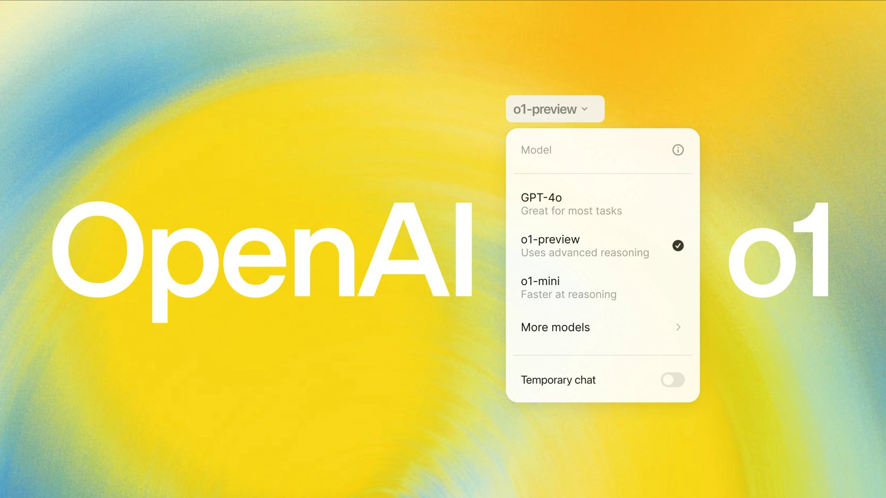
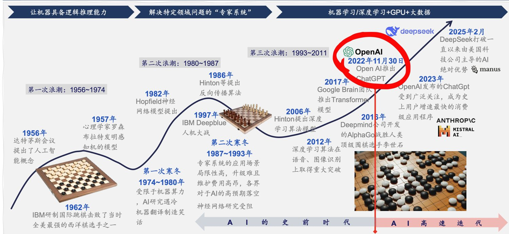
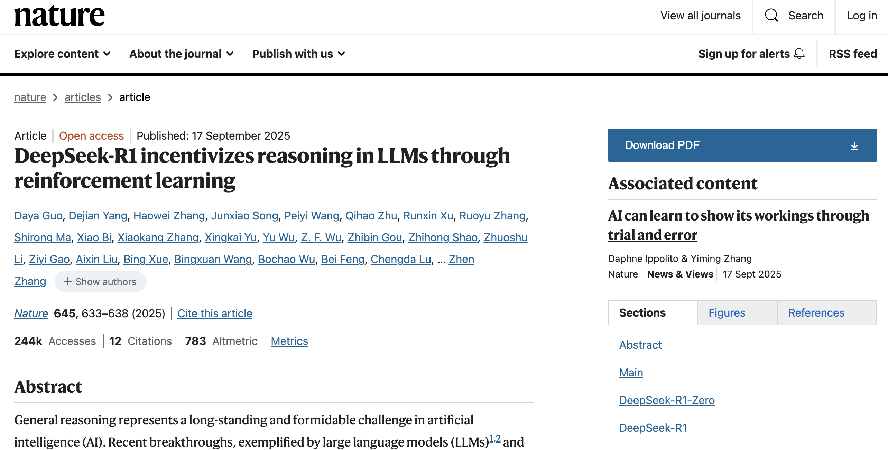
只靠答案对错作奖励，推理能力就会“长”出来
GRPO：和同组比，谁答对谁加分
优势 A > 0：提高该回答的概率；A < 0：降低。
若 8 个全对或全错，std = 0，没有学习信号——题目要“不难不易”。
从“答对一题”到“完成一项工作”
奖励 = 能执行的检查
数学答案、单元测试、程序输出：不再依赖人类偏好打分。几乎所有主流实验室的推理模型都使用某种形式的 RL。
“模拟公司”里练手
文档、表格、邮件组成的任务环境，每题配一个评分器。一家数据供应商报告：用 1,928 道专家任务做 RL，把某开源 397B 模型在 480 题留出集上的首次通过率由 16.1% 提到 27.3% ⚠。
同一思想，延伸到数学与科学
DeepMind 称其“RL + 搜索”思路延伸到 AlphaProof、Gemini Deep Think（2025 IMO 金牌水平）。
对管理者：企业的真实业务流程，就是潜在的 RL 环境；“能自动评分的任务”最先被智能体攻克。
不止游戏与机器人：真实世界的物理任务
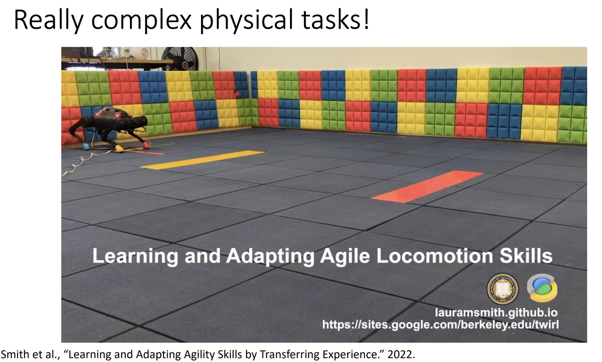
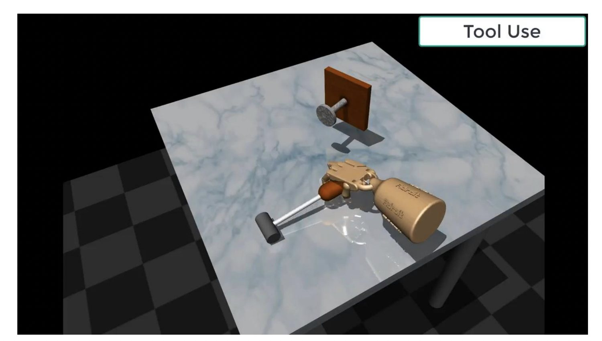
共同点：仿真中大量试错，再迁移到真实机器人——仿真成本远低于真机，但存在“仿真—现实差距”。
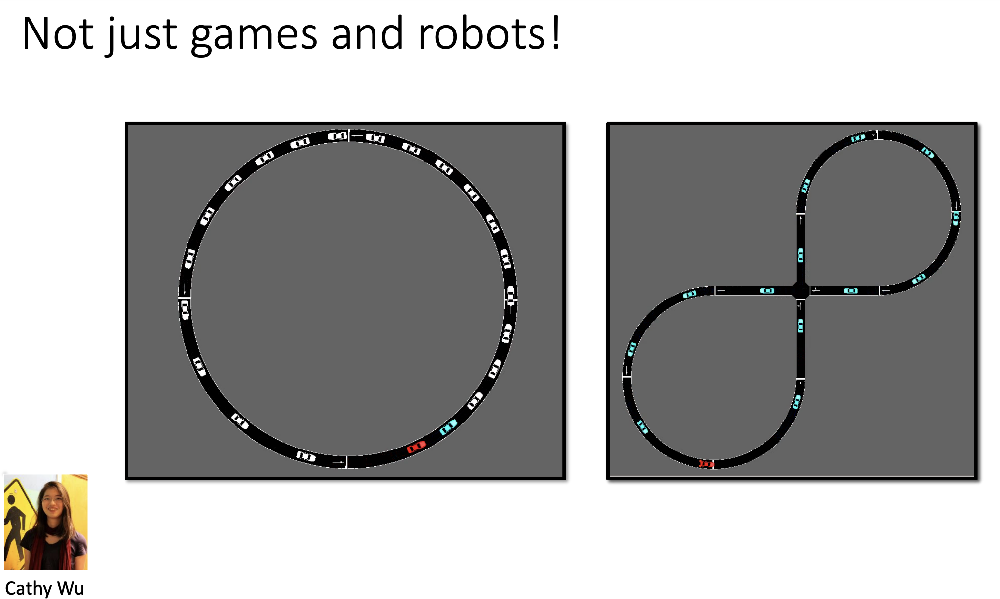
智能体 ×
交通系统
环形与“8”字形路网仿真：让少量自动驾驶车辆学会平滑加减速，缓解人类司机造成的“幽灵堵车”。
奖励 = 整个交通流的平均速度——优化的是系统，而不是单辆车。
奖励函数 = KPI：只奖励“赢”，AI 会变得莽撞
赭线 · KPI-A：只奖励和牌，最优在 a = 1。
蓝线 · KPI-B：和牌 +1，放铳 −2，最优在中间。
真实案例：NAGA 2026 的两种新风格，一种“极力避免末位”，一种“极力争第一”，对应不同的名次奖励。⚠ 二手来源
带走五句话
讨论：你所在行业里的“麻将”是什么？
① 什么是你的“状态、动作、奖励”？（例：定价、库存补货、广告竞价、信贷审批）
② 能否有一个“可以放心试错”的模拟环境？谁来建？成本多大？
③ 你会怎样设计奖励，避免被“钻空子”？
延伸阅读：Sutton & Barto《Reinforcement Learning: An Introduction》；Suphx 论文；DeepSeek-R1 Nature 论文
谢谢！
下一讲：L7 · AI 4.0 预训练大模型、提示词工程与智能体
常象宇 · 西安交通大学 管理学院 · xiangyuchang@xjtu.edu.cn
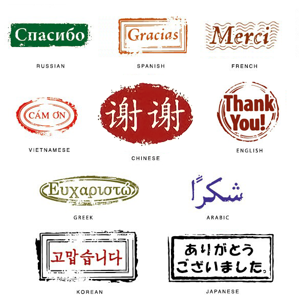
参考文献 R1–R16
R1 Silver et al.: Mastering the game of Go with deep neural networks and tree search. Nature 529, 484–489 (2016).
R2 Google DeepMind: From games to biology and beyond: 10 years of AlphaGo’s impact, 2026 — deepmind.google/blog/10-years-of-alphago/
R3 Li et al.: Suphx: Mastering Mahjong with Deep Reinforcement Learning. arXiv:2003.13590 (Microsoft Research Asia).
R4 腾讯：绝艺 LuckyJ 登顶天凤（2023-07-11）— news.qq.com/rain/a/20230711A03ZZ500；TechNode 2023-07-12。⚠ 厂商公布
R5 ACH（Actor-Critic Hedge），ICLR 2022；转引自 mahjongengines.com/engines/luckyj/
R6 Brown & Sandholm: Superhuman AI for multiplayer poker (Pluribus). Science 365 (2019).
R7 Guo et al.: DeepSeek-R1 incentivizes reasoning in LLMs through reinforcement learning. Nature 645, 633–638 (2025) — nature.com/articles/s41586-025-09422-z
R8 Gibney: Secrets of DeepSeek AI model revealed in landmark paper. Nature News, 2025-09-17.
R9 Hugging Face blog: How frontier models train on outcomes in 2026 — huggingface.co/blog/sergiopaniego/agentic-rl-2026 ⚠ 二手综述
R10 RL Research: RL environments just moved a 397B model, 转述 Mercor 训练指南（2026-09-01）— rlresearch.ai/blog/environments-move-frontier-models/ ⚠ 二手
R11 The Atlantic: A Game Plan for the AI Boom, 2026-03.
R12 Sutton & Barto: Reinforcement Learning: An Introduction (2nd ed., 2018).
R13 Smith et al.: Learning and Adapting Agile Locomotion Skills by Transferring Experience (2022)，引自原 PPT P34。
R14 Williams: Simple statistical gradient-following algorithms for connectionist RL (REINFORCE), 1992.
R15 Cryolite: 2026年11月現在における最強の麻雀 AI は？— qiita.com/Cryolite/items/ca471277c4a45e06f820 ⚠ 个人整理
R16 Mahjong Engines（麻将 AI 索引）— mahjongengines.com ⚠ 第三方索引
P 原 PPT：Materials/Lecture_6.2_RL.pptx（图片多来自原稿，来源见各页）